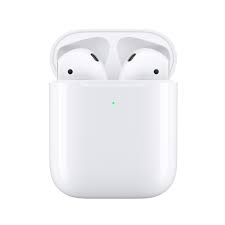

Hello! This post is a review of Apple’s AirPods. First, let’s talk about the design. They are shaped the same way the previous wired apple headphones are, because that design was shaped nicely and fit well into pretty much everyone’s ear. The nice thing about AirPods is of course they are wireless. This makes them feel much lighter, and you have a lot more maneuverability. I would recommend trying wireless headphones when you work out or go on a run. The battery life is very good. AirPods will last you through a whole day at work on one charge, and if you work really long hours, you still don’t need to bring your charger. AirPods come with a case that charge your pods when you set them in it. The case is good size, not too small where you would lose it, and not too big where it feels bulky. There are only two bad things I can think about AirPods. The first is the price. I got mine as a Christmas gift, and I think this is the perfect gift to give or receive. The second is talking on the phone. AirPods make it super easy to talk on the phone since you don’t have to hold it up to your head, but you might look like you’re talking to yourself since they are so small.
Daisy, Daisy,
Give me your answer, do!
I'm half crazy,
All for the love of you!